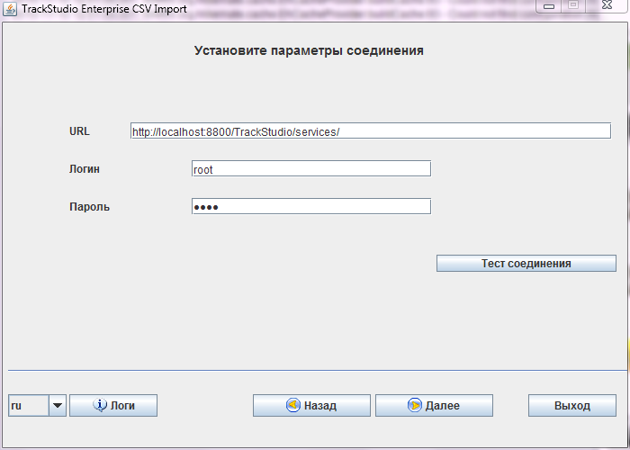
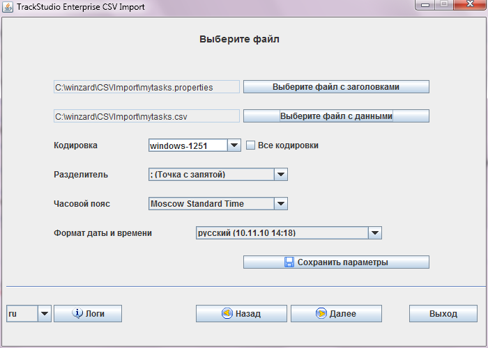
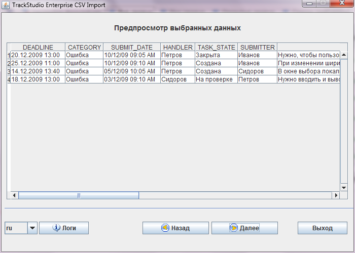
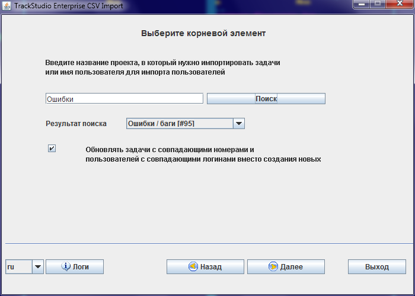

|
<< Click to Display Table of Contents >> Navigation: Rus > Руководство администратора > Как импортировать в TrackStudio ваши данные |
Есть много способов перенести ваши данные в TrackStudio. Самый простой из них - импортировать их в формате CSV. Как правило, в развитых системах управления задачами есть возможность выгрузить данные в этом формате. Тем более она есть в MS Excel (если по какой-то причине вы вели учет задач в нем).
Мы постарались максимально упростить и облегчить для вас процесс переноса данных. По сути, главное и самое сложное, что вам предстоит сделать - это указать, какому полю в ваших данных соответствует какое поле или параметр в TrackStudio. Для этого у нас есть файл csvdefault.properties.
Допустим, вы хотите импортировать задачи у вас есть файл mytasks.csv с данными:
"Состояние";"Отправитель";"Исполнитель";"Срок";"Дата создания";"Важность";"Заголовок";"Описание";"Категория"
Создайте файл mytasks.properties и в нем опишите соответствия ваших полей полям TrackStudio:
CATEGORY=Категория
TASK_STATE=Состояние
SUBMITTER=Отправитель
HANDLER=Исполнитель
DEADLINE=Срок
SUBMIT_DATE=Дата создания
PRIORITY=Важность
NAME=Заголовок
DESCRIPTION=Описание
В вашем экземпляре TrackStudio уже должны быть настроены соответствующие процессы и категории, заведены нужные пользователи и т.п. Пользователей, впрочем, можно так же импортировать из CSV, но доступ к проекту им придется задавать вручную.
Включите интеграцию с SOAP в Server Manager, либо укажите в файле trackstudio.properties trackstudio.soap=true. Запустите ваш экземпляр TrackStudio (если он еще не запущен). Затем запустите утилиту для импорта CSVImportManager (csvimport.exe для системы Windows). Эту программу можно скачать с нашего сайта после регистрации.

После запуска программа предложит вам ввести URL службы SOAP вашего экземпляра TrackStudio. К обычному URL TrackStudio, нужно добавить /services/. Введите также данные учетной записи пользователя, от которого будет осуществляться импорт. Не обязательно, чтобы это был root. Затем нажмите кнопку "Тестировать соединение". Программа проверит, доступен ли SOAP и правильно ли указаны данные учетной записи. Если все правильно, можно нажать кнопку "Далее"

Выберите файл с заголовками (тот самый .properties) и файл с данными. Выберите нужную кодировку и разделитель. Обратите внимание на формат указанных в файле дат. После нажатия на кнопку "Далее" вы перейдете к предварительному просмотру данных

В таблице предпросмотра вы можете оценить, насколько утилита верно поняла, что, в каком виде и куда вы хотите импортировать. Если в этих данных что-то не так - можно вернуться на шаг назад. Например, поменять формат даты или кодировку. Или исправить файл мэппинга, или файл с данными.
Если все правильно - нажмите кнопку "Далее"

Так как задачи в TrackStudio построены в иерархию, у каждой из них должна быть указана родительская задача. Это можно сделать в самом файле с данными, указав TASK_PARENT в виде номера родительской задачи, либо в файле мэппинга, указав TASK_PARENT="#23", например. Также можно выбрать "точку привязки в диалоговом окне, представленном на снимке выше. В строке поиска нужно указать название задачи, которая станет родительской для импортируемых. Если в файле данных указаны номера задач, соответствующие полю TASK_NUMBER, и такие задачи уже есть в системе, утилита может вместо создания новых задач обновить параметры существующих.
Затем, после выбора "точки привязки", нажмите кнопку "Далее" и начнется импорт данных.
Некоторые поля в TrackStudio являются обязательными. Например, очевидно, что нельзя создать задачау без категории или без названия. Однако если вы хотите создать все задачи с одной категорией - не обязательно добавлять соответствующую колонку в файл csv. В нашей утилите импорта работают подстановки - если колонки в файле с данными нет, но в мэппинге указано соответствие типа
CATEGORY="Задача"
То утилита подставит всем импортируемым задачам категорию "Задача", если, конечно, такая есть в настройках TrackStudio. Аналогичным образом работают подстановки для других полей. Обязательно заключите значение подстановки в кавычки.